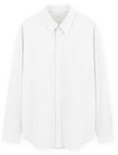
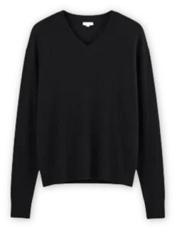
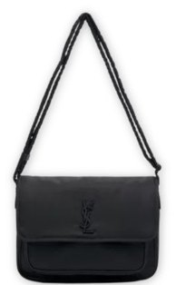
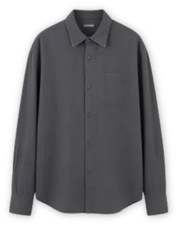
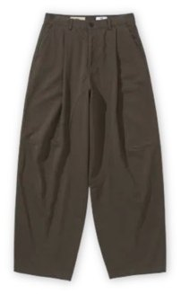
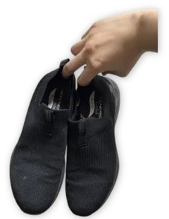

아침 -2°, 낮에도 3°에 바람이 강해 체감은 더 낮아요. 밤사이 눈비가 얼어 출근길이 미끄러울 수 있으니 두꺼운 아우터에 밑창이 단단한 신발을 고르세요. 근무 일정표에 없는 날이고 캘린더도 볼 수 없어, 평일이라 근무로 추정했어요.
1 / 6
추천
브라운야드 딥그린 니트 + 퍼스트플로어 그레이 싱글 코트
그레이 코트와 블랙 하의로 무채색 틀을 잡고, 색은 브라운야드 딥그린 니트 하나만 넣었어요. 한 가지 어두운 톤 안에서 울·니트·데님처럼 질감을 달리하면 단색 코디가 밋밋하지 않다는 겨울 모노톤 가이드를 따랐어요. 니트 안에 POTTERY 화이트 스트라이프 셔츠를 받쳐 실내에서 코트를 벗어도 단정해요.
코트퍼스트플로어 그레이 싱글 코트
엉덩이를 덮는 울 코트라 영하 출근길 바람을 막아줘요. 최근 추천에 안 나온 코트예요.
니트브라운야드 딥그린 니트
올리브빛이 도는 차분한 딥그린이라 그레이 코트 안에서 유일한 포인트 색이 돼요.

셔츠POTTERY 화이트 스트라이프 셔츠
니트 목선 위로 깃만 살짝 보이게 입어요. 한 겹 더해 보온도 챙겨요.
청바지ART IF ACTS 블랙 투턱 청바지
ART IF ACTS 블랙 투턱 청바지는 통이 넉넉해 롱 코트와 비율이 맞고, 근무 중에도 편해요.
부츠ROMANTIC MOVE 블랙 첼시 부츠
살얼음 낀 길엔 발목을 잡아주는 ROMANTIC MOVE 블랙 첼시 부츠가 안전해요.
숄더백르메르 블랙 호보 숄더백
르메르 블랙 호보 숄더백으로 전체를 블랙으로 마무리해요.
대안
완전 무채색: artifact 블랙 브이넥 니트 + PRADA 블랙 숏 패딩
색을 아예 빼고 블랙·그레이·차콜만 쓴 버전이에요. 블랙 니트에 블랙 패딩을 겹치는 올블랙 조합은 겨울 미니멀 룩의 기본이고, 브이넥 사이로 그레이 셔츠를 보이게 해 올블랙의 답답함을 덜었어요. 코트보다 가볍고 움직이기 편해요.
패딩PRADA 블랙 숏 패딩
PRADA 블랙 숏 패딩은 가볍고 따뜻해 병원 안팎을 오갈 때 벗고 입기 쉬워요.

니트artifact 블랙 브이넥 니트
브이넥이라 셔츠 깃이 자연스럽게 드러나요.
셔츠파브레가 그레이 셔츠
파브레가 그레이 셔츠를 이너로 넣어 블랙 사이에 밝은 톤을 한 줄 넣어요.
청바지siiido 차콜 커브드 청바지
siiido 차콜 커브드 청바지로 상의 블랙과 톤 차이를 살짝 줘요.
스니커즈NEW BALANCE 그레이 스니커즈
NEW BALANCE 그레이 스니커즈는 종일 서 있어도 편하고 차콜 바지와 톤이 이어져요.

크로스백생로랑 블랙 나일론 크로스백
생로랑 블랙 나일론 크로스백으로 손을 비워요.
대안
가장 따뜻하게: NONBLANK 브라운 하프집 니트 + 지오송지오 블랙 후드 패딩
체감 온도가 많이 낮게 느껴지면 이 조합이에요. 두꺼운 하프집 니트로 목을 덮고 후드 패딩을 걸쳐 보온을 최우선으로 했고, 색은 톤 다운된 브라운 하나만 썼어요. 실내외 온도 차가 큰 겨울 출근길엔 벗기 쉬운 겉옷과 도톰한 이너 조합이 실용적이에요.
패딩지오송지오 블랙 후드 패딩
후드까지 있는 지오송지오 블랙 패딩이라 찬 바람이 강한 날 든든해요.
니트NONBLANK 브라운 하프집 니트
지퍼를 올리면 목도리 없이도 목이 따뜻하고, 회갈색에 가까운 브라운이라 블랙과 잘 섞여요.
청바지siiido 블랙 커브드 청바지
siiido 블랙 커브드 청바지로 하의는 블랙으로 눌러줘요.
스니커즈아이보리 레더 스니커즈
아이보리 레더 스니커즈는 가죽이라 젖은 길에도 괜찮고 어두운 코디를 밝혀줘요.
백팩YOUTH 블랙 백팩
YOUTH 블랙 백팩으로 편하게 들어요.
옷장 자동 조합
ART IF ACTS 워시드 블랙 셔츠 + NOIR LARMES 브라운 무스탕
같은 날씨와 격식 기준(무채색 위주, 포인트 컬러는 하나까지)으로 옷장에서 자동으로 고른 조합이에요.

셔츠ART IF ACTS 워시드 블랙 셔츠
무스탕NOIR LARMES 브라운 무스탕

정장바지시도 브라운 투턱 정장바지
스니커즈위더로드 브라운 스웨이드 스니커즈
백팩YOUTH 블랙 백팩
옷장 자동 조합
WAVINESS 그레이 스트라이프 셔츠 + TIME HOMME 블랙 숏 패딩
같은 날씨와 격식 기준(무채색 위주, 포인트 컬러는 하나까지)으로 옷장에서 자동으로 고른 조합이에요.
셔츠WAVINESS 그레이 스트라이프 셔츠
패딩TIME HOMME 블랙 숏 패딩
청바지쿠어 라이트블루 와이드 청바지

슬립온SKECHERS 블랙 니트 슬립온
크로스백생로랑 블랙 나일론 크로스백
옷장 자동 조합
POLO RALPH LAUREN 라이트그레이 후드 + K2 차콜 후드 패딩
같은 날씨와 격식 기준(무채색 위주, 포인트 컬러는 하나까지)으로 옷장에서 자동으로 고른 조합이에요.

 코트퍼스트플로어 그레이 싱글 코트
코트퍼스트플로어 그레이 싱글 코트 니트브라운야드 딥그린 니트
니트브라운야드 딥그린 니트 청바지ART IF ACTS 블랙 투턱 청바지
청바지ART IF ACTS 블랙 투턱 청바지 부츠ROMANTIC MOVE 블랙 첼시 부츠
부츠ROMANTIC MOVE 블랙 첼시 부츠 숄더백르메르 블랙 호보 숄더백
숄더백르메르 블랙 호보 숄더백